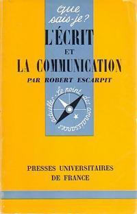
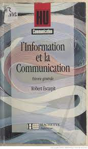

Galerie
Robert Escarpit a écrit de nombreux ouvrages, principalement dans le domaine de la sociologie de la communication.
Voici quelques-uns de ses ouvrages les plus connus :
Sociologie de la littérature, Paris, Presses universitaires de France, 1958.
(coll. Que sais-je ? no 777) [8e édition 1992].

L’Écrit et la communication, Paris, Presses universitaires de France, 1973.
(Que sais-je ? ; no 1546) [4e édition : 1983].

Théorie générale de l’information et de la communication, Paris, Hachette, 1976.